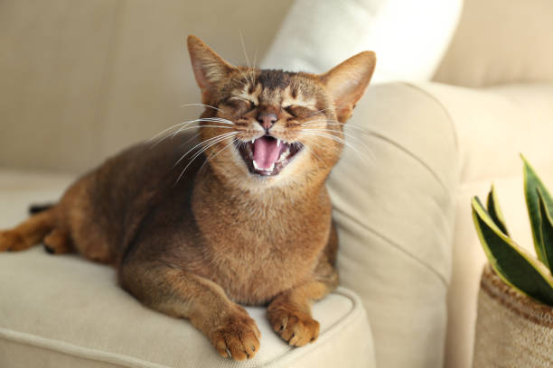
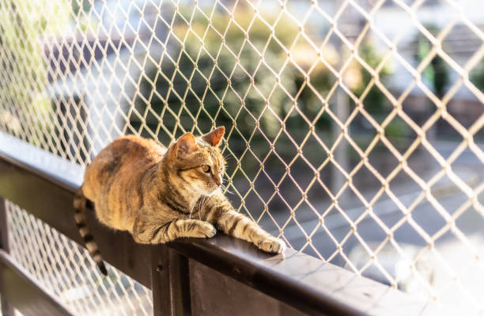
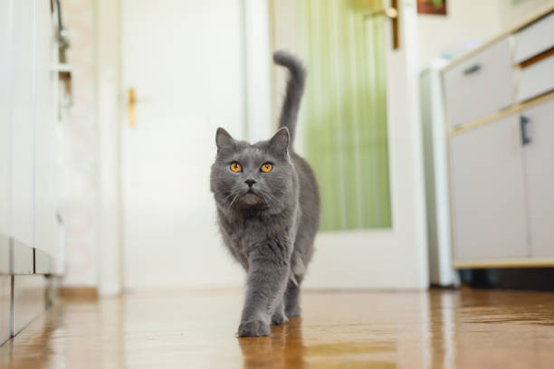
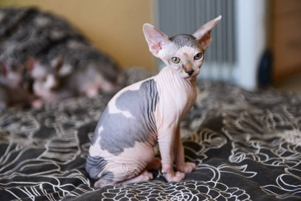

Gatos en adopción
Descripción
Aca tenemos a Beto, en un precioso gatito que fue donado por sus dueños ya que lastimosamente les toco mudarse a un departamento en la cuidad en la que no aceptaban mascotas. Juan y Bety ( sus anteriores dueños) decidieron ponerse en contacto con nosotros para que los ayudaramos a encontrale un nuevo hogar a su querido gatito. Muy tristes por tener que darlo en adopcion pero con la esperanza de que pueda se recibido en un nuevo hogar que le brinde todo el amor y el cariño que se merece nos dejan informacion detalla de las actividades que le encantaban a Beto realizar.
- Edad:1 año
- Le gusta jugar al aire libre
- Es muy energico y saltarin
Descripción
Le mostramos a este lindo gatito atigrado al cual un dia caminando por las calles de Caballito nos encontramos cerca de una plaza, lo trajimos a nuestro refugio, lo hidratamos, lo limpiamos y alimentamos. Ahora se encuentra bien sanito, con buen peso y buscando un hogar donde puedan cuidarlo y darle mucho amor para seguir creciendo sano y fuerte. Es cachorrito se calcula que debe tener al rededor de los 9 meses pero esta bastante saludable y lleno de energia, mejoro bastante para el estado en el que se consiguio y ahora feliz y con su pelo brillante posa para su foto de adopcion.
- Edad:9 meses
- Es muy tranquilo y dormilón
- Le gusta los bocadillos humedos
Descripción
Lorena es toda una señora grande ya, que le gusta que le acaricien la panza y comer a toda hora, su antigua dueña ya bastante grande y con algunos problemas de salud lamentablemente no puede seguir dandole los cuidados que se merece y por ende optó por comunicarse con nosotros para ayudarla a conseguirle una nueva casita a su amada gatita que la acompaño durante tantos años. Siempre fiel y juguetona Lorena es la perfecta acompañante para aquellas personas que no les moleste estar con un gatito que no se quiere despegar de ti en ningun momento, siempre y cuando no le falte comida, si no se pone odiosa.
- Edad:7 años
- Le gusta jugar con otros gatos
- Es muy tranquila
Descripción
Este hermoso gatito chiquitito y delgadito esta buscando nuevo hogar para llevar amor. Fue encontrado en la calle casi recien nacido en una cajita junto a sus hermanitos. Despues de darle todos los cuidados necesarios, desde alimentarlo hasta vacunarlo, esta bastante bien de salud, energico y en busca nuevos dueños que le enseñen a portarse bien y jugar con el. Le encanta estar dando saltos por todos lados y lo atraen todo tipo de sonidos; si decides quedarte con el disfrutaras como nunca con este pequñin extrovertido y mimoso cachorrito, se adapta bien a lugares chicos y se lleva increible con otros animalitos.

- Edad:5 meses
- Le gusta mucho los mimos
- Le atrae el ruido de los cascabel
Descripción
Este pequeñin amiguito sin cabello es un precioso gato esfinge (como suelen llamarlo), es el hermano menor de 6 lindos gatitos, sus dueños ya tenian una pareja de adultos y tener a 8 gatos dentro de su departamento les parece demasiado. Nos han contactado para brindarles una mano en la busqueda de un nuevo hogar para alguno de ellos, en especial para este chiquitin. Requiere de algunos cuidados especial y estar en un lugar calido debido a la ausencia de su pelaje, aunque suelen ser de la raza de gatos mas mimosa que existe segun muchas personas. "LOS AMIGOS NO SE COMPRAN, SE ADOPTAN"
- Edad:6 meses
- Le gusta mucho tomar leche
- Le encanta estar en brazos